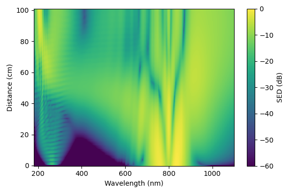

        <section>
          <h3 style="margin: 0 0 0.4em;">The Same Fission Dynamics, a Different Target</h3>
          <div style="display: flex; gap: 1.2em; align-items: center;">
            <div style="flex: 1; min-width: 0; position: relative;">
              
              <svg viewBox="0 0 595 396" preserveAspectRatio="none"
                   style="position: absolute; inset: 0; width: 100%; height: 100%; pointer-events: none; overflow: visible;">
                <g class="fragment" data-fragment-index="0">
                  <rect x="69" y="18" width="36" height="318" fill="none" stroke="#8C1515" stroke-width="3"/>
                </g>
                <g class="fragment" data-fragment-index="1">
                  <rect x="106" y="18" width="371" height="318" fill="none" stroke="#1565C0" stroke-width="3"/>
                </g>
              </svg>
            </div>
            <div style="flex: 1; font-size: 0.42em;">
              <div class="fragment" data-fragment-index="0">
                <div class="col-box" style="border: 2px solid #8C1515; border-radius: 8px; padding: 0.7em 0.9em; background: #fdf5f5;">
                  <ul style="margin: 0; padding-left: 1.2em;">
                    <li>Usually: isolate the RDW island as an intense, tunable deep-UV pulse</li>
                  </ul>
                </div>
              </div>
              <div class="fragment" data-fragment-index="1" style="margin-top: 0.6em;">
                <div class="col-box" style="border: 2px solid #1565C0; border-radius: 8px; padding: 0.7em 0.9em; background: #f5f8ff;">
                  <ul style="margin: 0; padding-left: 1.2em;">
                    <li>Alongside it: broad, relatively flat white light &mdash; can we put that to use too?</li>
                  </ul>
                </div>
              </div>
            </div>
          </div>
          <aside class="notes">
            <ul>
              <li>Same figure as "Generating a Soliton" — the spectral evolution down the fibre, previously used to explain RDW emission.</li>
              <li>Not a new nonlinear effect — same fission dynamics, different use. Usually we only care about the RDW island; the rest of the spectrum, generated in the same shot, is broadband and relatively flat — normally discarded, but potentially useful as a probe.</li>
              <li>Sets up why solution-phase TA needs this kind of broadband probe, and the apparatus that delivers it.</li>
            </ul>
          </aside>
        </section>
